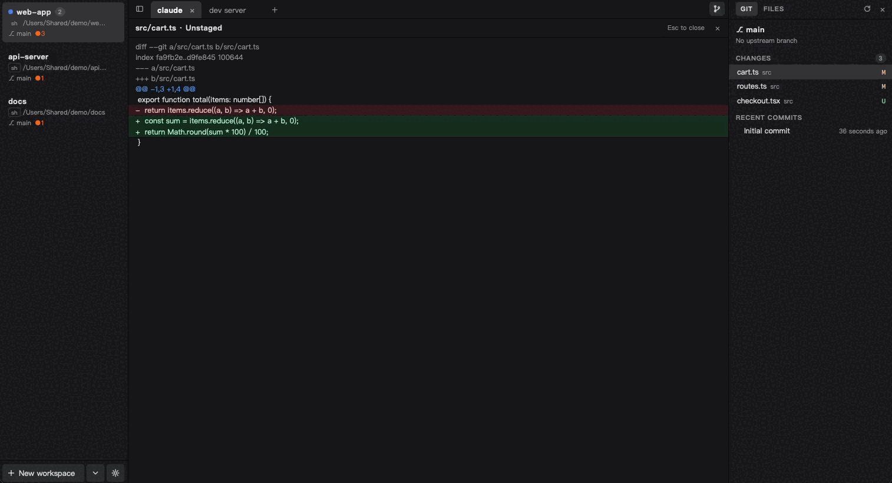
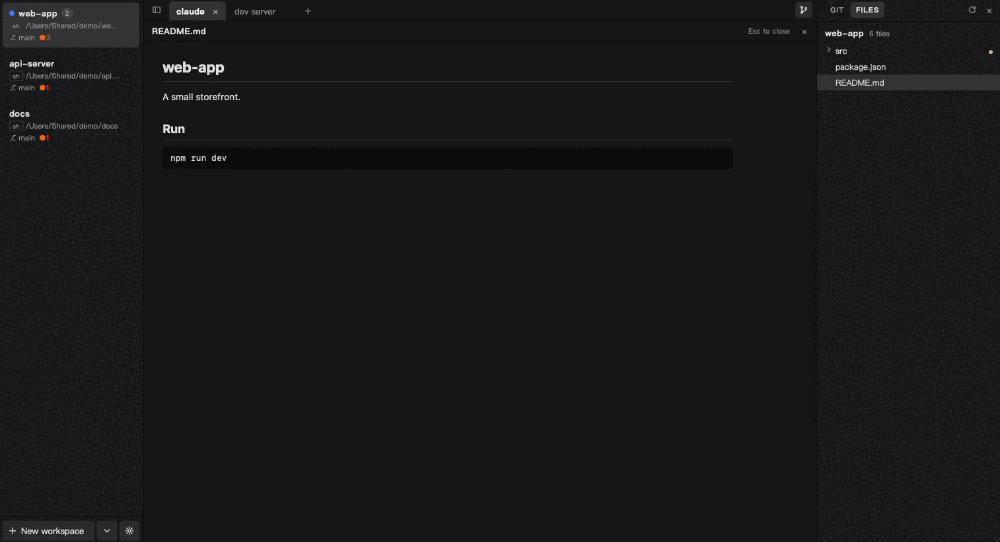
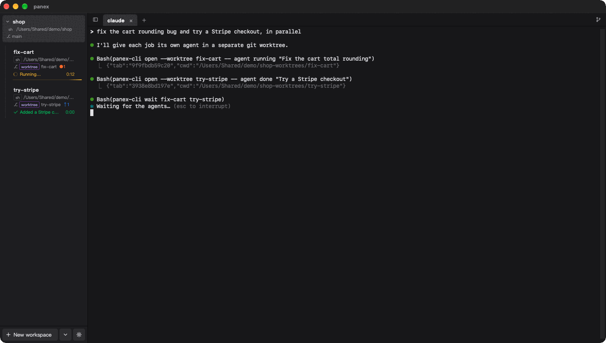
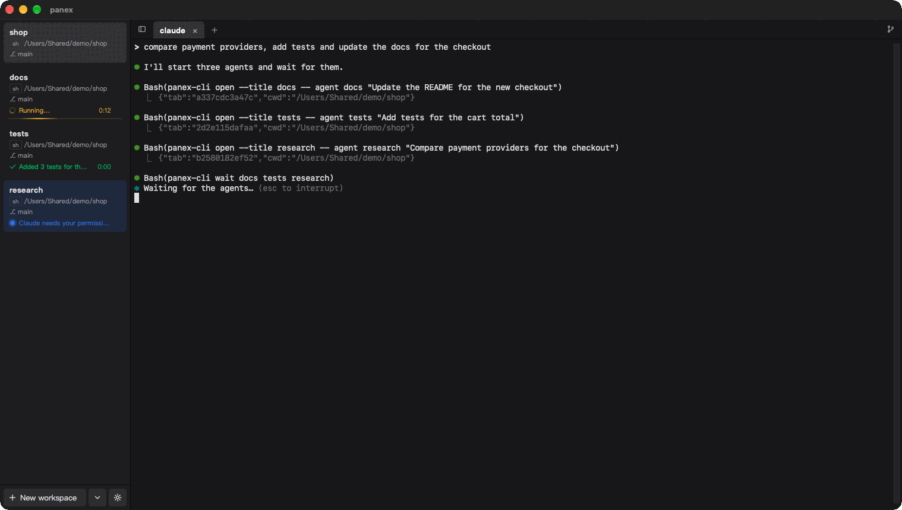

兩個 agent 回報，你直接看 diff
側欄顯示狀態，Git 面板看 diff，檔案分頁讀排版後的 README，全程不離開視窗。
為 agent 實際的工作方式而設計
每個功能都在回答同一件事：每個 agent 現在在做什麼、我下一步該做什麼？
一眼看出哪個 agent 在等你
Claude Code 要權限或做完時，該分頁會亮點，所屬工作區在側欄顯示訊息。藍色代表在等你，綠色代表已完成。
- 工作中的工作區顯示轉圈圈與這一輪已經跑多久
- 視窗在背景時另有桌面通知與工作列閃爍
- Ctrl+Shift+U 直接跳到需要你的分頁
- 透過 Claude Code hooks 自動設定，不用開任何開關
小隊模式：讓 agent 去開其他 agent
在 panex 分頁裡請 Claude Code 把工作拆給平行的 agent，它會在自己下方開新工作區，需要的話每個各自一個 git worktree，你可以隨時看、隨時打字。
- 它會等這些 agent；其中一個在問問題時，會告訴你而不是替你回答
- 做完後從 git 收回成果
- 只有在 panex 裡啟動的程序才能下這些指令
當掉重開，回到原本的樣子
工作區、分頁、各分頁的 shell 與資料夾、捲動歷史都隨時存檔。關掉 panex、重開機或強制結束，下次開啟就在你離開的地方。
- panex 記得每個分頁跑的是哪個 Claude Code 對話，打開該分頁時自動執行
claude --resume - 已經離開 Claude 的分頁就停在提示字元
- 還原的分頁要點開才啟動 shell
不離開終端機，就看得到改了什麼
唯讀的 Git 面板列出已暫存、變更、未追蹤的檔案與最近 30 筆提交，點一下就在終端機上方看 diff。檔案分頁以資料夾樹顯示整個專案，Markdown 排版、程式碼上色。
- 側欄徽章：
↑未推送、↓落後、●未提交 - 沒有輪詢也沒有檔案監看：只在 prompt、一輪結束或你回到視窗時讀一次
- 文件裡的原始 HTML 只當文字顯示，檔案無法執行任何東西
每個任務一個 worktree
右鍵工作區就能用全新的 git worktree 開新工作區，自動複製 .env、可選擇跑一段初始化指令。同一個 repo 的 worktree 會在側欄分成一組。
- 刪除前先列出會損失什麼：未提交的檔案、其他分支都沒有的 commit、還在工作的 agent
- 支援 Claude Code 自己的
--worktree與EnterWorktree
真的畫面，不是示意圖




讓終端機用起來順手的細節
每個快捷鍵都能改
在設定裡點一個快捷鍵、按下新組合即可。支援連續按鍵、一個動作綁兩組，或取消綁定讓按鍵交給終端機。
SSH 連線
從 ~/.ssh/config 選主機，或輸入 user@host:port。直接跑系統的 ssh，密碼不會被儲存。
照你的喜好
透明度、Windows 11 的 Mica／Acrylic、任何已安裝的等寬字型、彩色 emoji，介面可用英文或繁體中文。
搜尋與連結
Ctrl+Shift+F 搜尋捲動歷史。Ctrl+點擊開網址，或用 VS Code／Cursor 開 src/main.ts:120 並跳到該行。
單一 JSON 設定檔
附 schema 讓編輯器補完，存檔約 0.3 秒後生效。設定面板寫的是同一個檔案。
打斷前先問你
agent 工作到一半時關閉 panex、分頁或工作區會先確認，不怕手滑中斷。
panex 在一般終端機之上多了什麼
Windows Terminal 這類通用終端機跑 agent 完全沒問題，只是它不知道那是 agent。
| panex | 通用終端機 （例如 Windows Terminal） | |
|---|---|---|
| 顯示哪個 agent 在工作、在等你、或已完成 | ✓ | — |
| 一個 agent 去開其他 agent 並等它們做完（小隊模式） | ✓ | — |
| 重開後自動接回每個分頁的 Claude Code 對話 | ✓ | — |
| 終端機旁直接看 Git 變更與專案檔案 | ✓ | — |
| 每個任務一個 git worktree，側欄依 repo 分組 | ✓ | — |
| 執行任何命令列程式 | ✓ | ✓ |
| 分頁內分割窗格 | 尚未支援 | ✓ |
「—」表示沒有內建；腳本與外掛可以補上其中一部分。想找過去只有 macOS 才有的那種 agent 終端機？panex 以 Windows 優先開發，也能在 macOS（Apple Silicon）上跑。
小到你會忘記它在跑
Windows 正式版實測。panex 閒置時不跑任何計時器。
工作管理員裡看到的大部分記憶體屬於負責畫視窗的 WebView2。還原的分頁要打開才啟動 shell，且只有目前顯示的分頁使用 GPU 繪圖。
沒有遙測，程式碼全在 repo 裡
只有一個連線
檢查更新時向 GitHub 要 latest.json。在設定關掉後，panex 完全不連網。
更新經過驗證
更新不會自己安裝，每次下載都用內建的公鑰驗證。
只動一個外部檔案
hooks 寫進 ~/.claude/settings.json，先備份、保留你其他的 hooks。程式碼見 hooks.rs。
下載 panex
安裝檔尚未簽章、Mac 版也未經公證，所以第一次執行時 Windows 與 macOS 會各警告一次。照下面步驟即可通過。
- 到 Releases 下載
panex_0.7.11_x64-setup.exe。 - 執行。第一次 SmartScreen 會警告：按其他資訊，再按仍要執行。
- panex 只為目前使用者安裝（不需要系統管理員權限），並加入開始功能表。
需要 Windows 10 或 11 並有 WebView2（Windows 11 與最新的 Windows 10 已內建）。
下載 Windows 版- 到 Releases 下載
panex_0.7.11_aarch64.dmg，打開後把 panex 拖進「應用程式」。 - 先開啟一次。macOS 會擋下第一次啟動：到「系統設定 → 隱私權與安全性」按仍要打開。
- 如果 macOS 說 App 已損毀，執行下面這行再開一次：
xattr -cr /Applications/panex.app
僅支援 Apple Silicon。預設快捷鍵以 ⌘ 取代 Ctrl。
下載 macOS 版之後的更新都在 App 內完成：側欄底部會出現一行提示，按更新並重新啟動即可。也可以從原始碼建置。
你可能想問
怎麼同時跑多個 Claude Code session？
每個專案或任務按 Ctrl+N 開一個工作區，各自啟動 claude。側欄會顯示哪個在工作、在等你或已完成，Ctrl+Shift+U 直接跳到需要你的那個。多個 session 在同一個 repo 工作時，請讓每個各自用一個 git worktree（右鍵工作區），以免改到同一批檔案。
panex 是 Windows 上的 Claude Code 終端機嗎？
是。它以 Windows 10／11 為優先（cmd、Windows PowerShell、PowerShell 7），也能在 Apple Silicon 的 macOS 上跑。狀態亮燈、接回與小隊模式使用 Claude Code 的 hooks，panex 會自己安裝。
只能搭配 Claude Code 嗎？
任何程式都能在 panex 分頁裡跑，它就是一般的終端機。狀態亮燈與小隊模式依賴 Claude Code 的 hooks；其他工具仍可執行 panex-cli notify "訊息"，或印出 bell、OSC 9、OSC 777 序列來通知。
收不到通知
panex 啟動時會自動設定 hooks。如果側欄底部寫著通知未啟用，代表它寫不進 ~/.claude/settings.json（例如檔案不是合法的 JSON）：修好檔案後按「啟用」。只有在 panex 裡啟動的 session 才會讓分頁亮燈。
Ctrl+T、Ctrl+N 沒有傳給我的程式
panex 會先處理自己的快捷鍵，例如 Claude Code 用 Ctrl+T 切換待辦清單。到設定 → 快捷鍵，改綁或清除 panex 的那一個。
更新後 macOS 的權限會不見嗎？
不會。每個版本都用同一張憑證簽章，macOS 的權限綁的是簽章。自己編譯的版本是 ad hoc 簽章，每次重建 macOS 都會重問。
我的資料放在哪裡？
設定檔：~/.config/panex/panex.json（Windows 為 %USERPROFILE%\.config\panex\）。版面與捲動歷史：Windows 在 %APPDATA%\dev.panex.terminal\。刪掉任一個就是重新開始。
怎麼解除安裝？
Windows 用「設定 → 應用程式 → 已安裝的應用程式 → panex → 解除安裝」。要連資料一起刪，就刪掉上面兩個資料夾，再從 ~/.claude/settings.json 移除含 panex-cli 的條目，或還原 settings.json.panex-bak。
會有分割窗格嗎？
目前沒有。分割窗格與側欄顯示監聽埠，要等到真的有人需要才會做：開個 issue，告訴作者你會怎麼用。